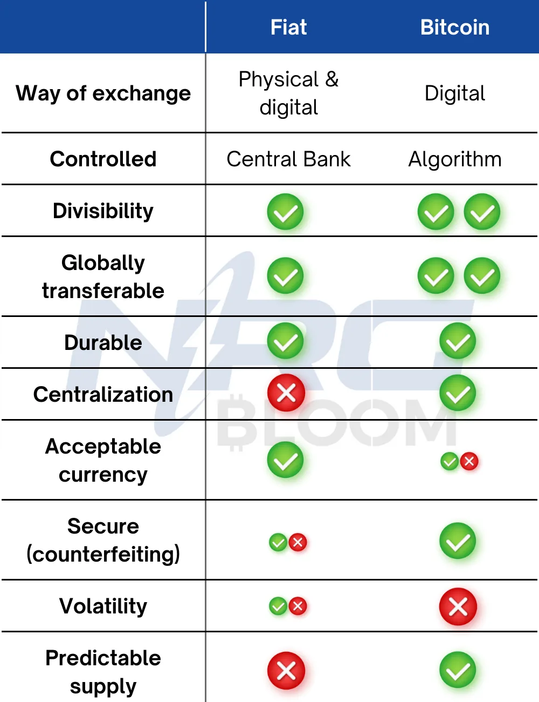
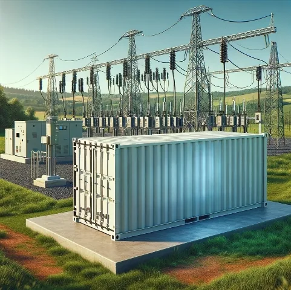
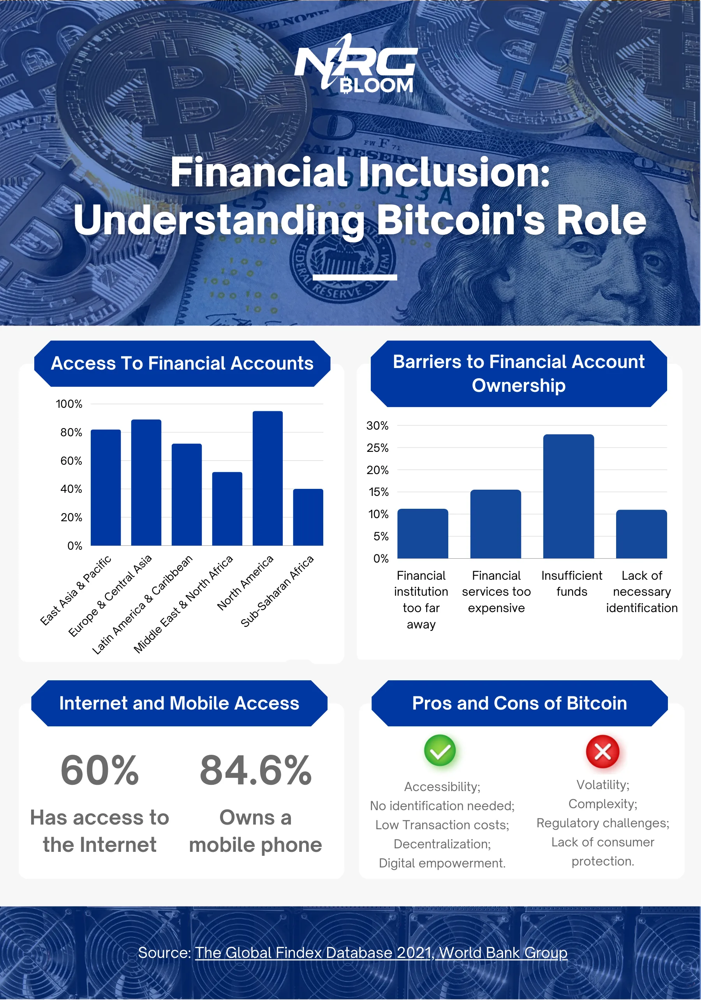
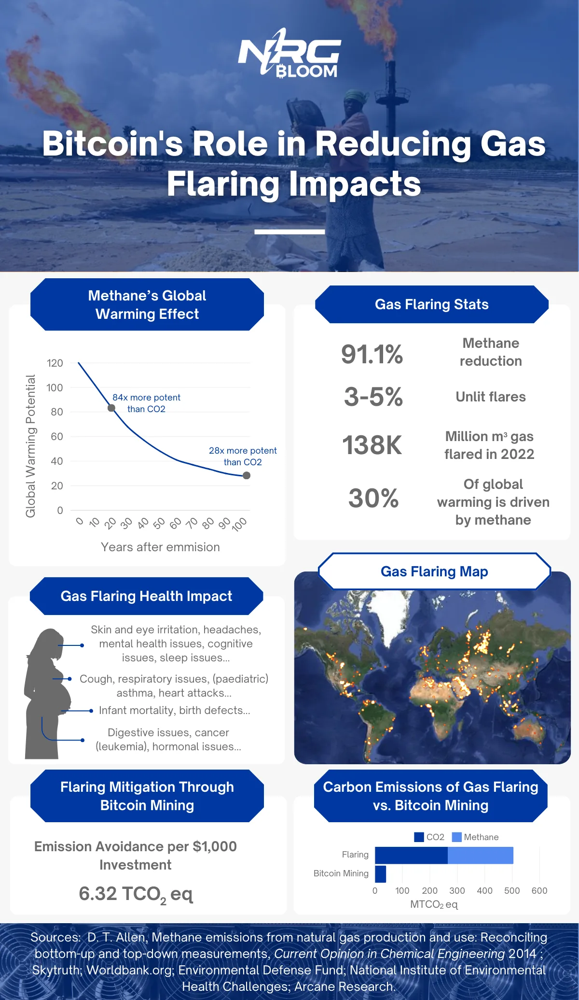
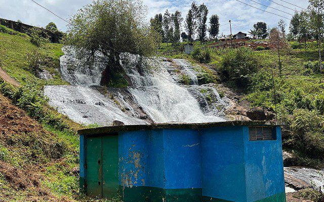
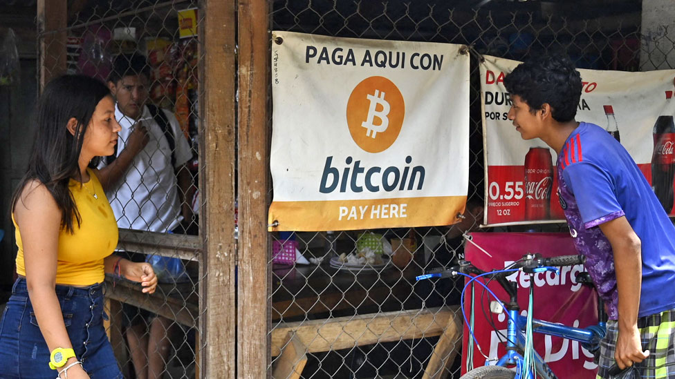

The Socioeconomic Impact of Bitcoin in Developing Countries
Exploring the economic and environmental impact of Bitcoin reveals its multifaceted role in reshaping the global economic system. This blog post aims to dissect Bitcoin's economic impact, particularly focusing on its influence in developing countries and rural communities. While Bitcoin's environmental implications are a subject of much discussion and are covered in another of our blog posts, here, we concentrate on understanding Bitcoin’s economic impact and the ramifications it holds for the socio-economic structures in these specific areas.
General Advantages and Disadvantages of Bitcoin and Bitcoin Mining
Advantages
Decentralization
The Bitcoin Network functions on a decentralized array of computers known as nodes. Anyone with the willingness and resources can establish a node. Each node maintains a copy of the Bitcoin Blockchain. These nodes play a crucial role in the network by either approving or denying new transactions based on their adherence to the Bitcoin Network's rules. This decentralized approach ensures the security and integrity of the Bitcoin network, preventing any single central entity from unilaterally imposing its own regulations. This is in stark contrast to traditional financial systems, where a central bank, for example, might decide to print an additional 1 billion dollars, thereby inflating the currency supply regardless of popular consensus.
In the context of Bitcoin, if someone attempted to alter the blockchain's code—such as by creating a fork that increases the maximum Bitcoin supply from 21 million to 50 million—the majority of nodes would simply reject any transactions associated with this altered, forked chain. Instead, they would continue to support the original blockchain with its established cap of 21 million bitcoins. This system of consensus and adherence to established rules is fundamental to the Bitcoin network's operation and resilience.Peer-to-peer
This aspect is closely related to the principle of decentralization. Since Bitcoin functions autonomously, without the oversight of any central authority, individuals can engage in direct transactions with each other, bypassing intermediaries. This approach offers enhanced privacy, as Bitcoin addresses are not tied to personal identities. Additionally, it affords users the freedom to conduct transactions and generally results in lower transaction fees due to the absence of middlemen. This elimination of intermediaries has led to a significant shift in where trust is placed: while the traditional fiat system requires us to trust banks and financial institutions, this peer-to-peer (P2P) system transfers trust to the underlying technology and cryptographic algorithms.
Accessibility
Bitcoin was created with the intention of offering a more equitable payment system, and its accessibility and versatility are crucial components of this vision. Traditional banking systems often fall short in serving rural communities, where access to banking infrastructure and services can be limited. Bitcoin addresses this challenge by its design. To engage in Bitcoin transactions, users merely require a device with internet access. This simplicity eliminates the need for conventional banking prerequisites such as identification, credit cards, or physical banking facilities. Therefore, Bitcoin presents a viable alternative for communities underserved by traditional financial systems, democratizing access to financial transactions.
Limited Supply

Monetizing Stranded Energy
Bitcoin mining offers a significant solution for capitalizing on stranded energy, a challenge currently faced by the energy industry. Stranded energy typically occurs with renewable sources such as solar and wind, as well as with natural gas, which often emerges as a byproduct from the oil industry. It's also an issue in countries with inefficient energy infrastructure. This unused power not only results in substantial financial losses and load shedding but can also lead to severe environmental and health consequences.
Disadvantages
Volatility
The limited supply of Bitcoin may lead to a shortage of liquidity, which in turn can trigger fluctuations in its price. This volatility poses a challenge for using Bitcoin as a standard currency, as it becomes difficult to establish stable pricing. Moreover, such price instability can be problematic for individuals who depend on Bitcoin in the short term, as a sudden decrease in its value could have adverse effects on their financial situation.
Environmental Impact
Self Custody
While not inherently a disadvantage of Bitcoin, the concept of self-custody may pose challenges for certain individuals. Given Bitcoin's decentralized nature and the absence of central authority control, there's also a lack of protection from any central entity. This means that Bitcoin transactions lack legal safeguards and are generally irreversible, making them vulnerable to fraudulent schemes. Moreover, the responsibility for securing one's wallet falls entirely on the user, especially for those not using a centralized exchange. This responsibility can lead to problematic situations for individuals who are not tech-savvy or those who may not fully comprehend the importance of robust security measures in managing their digital assets.
Technological barriers
Despite Bitcoin's design aiming for maximum accessibility, it is fundamentally digital and therefore necessitates an internet connection and a device to access it. This requirement can pose challenges in impoverished or extremely remote communities where such resources are scarce. However, this barrier is gradually being overcome thanks to the emergence of new technologies, such as Starlink, which provide internet connectivity in previously unreachable areas. Additionally, the increasing adoption of smartphones, even in rural regions, is progressively closing this accessibility gap. These developments are slowly but surely making Bitcoin more accessible to a broader range of communities worldwide.
Problems and Opportunities in Developing Nations and Rural Areas: The Role of Bitcoin and Bitcoin Mining in Providing Solutions
International Transactions and Remittances
Migrant workers often send funds to their families back in their home countries, a practice known as remittances. These remittances are a crucial source of income for many developing nations. However, a significant challenge with remittances and international money transfers is the high fees and unfavorable exchange rates charged by traditional banking systems and money transfer services. These costs can significantly reduce the amount received compared to the original sum sent. Additionally, some countries (both sending and receiving) have stringent regulations on remittances, complicating and increasing the cost of the process. An example of this is the transactional relationship between the US and Cuba.
Bitcoin, being a peer-to-peer (P2P) and decentralized system, offers a solution to these issues. It enables lower transaction fees and more market-reflective exchange rates. Bitcoin can also circumvent currency controls, and another notable benefit is the increased speed of transactions. By leveraging Bitcoin, individuals can bypass many of the traditional barriers associated with sending remittances, making the process more efficient and cost-effective.
Inflation
While inflation is a global phenomenon, it tends to be significantly higher in developing countries compared to developed nations. Various factors contribute to these elevated inflation rates, including limited tools to control inflation, a heavy reliance on imports, and infrastructural challenges. High inflation can create numerous problems in developing countries and rural areas, particularly as people often lack means to safeguard and grow their wealth.
Bitcoin presents a potential solution in such scenarios. It offers an alternative way for individuals to store their wealth in a more flexible manner. For instance, those who may not have sufficient funds to invest in real estate or other traditional assets can consider Bitcoin as an option. By investing even small amounts in Bitcoin, they have the opportunity to preserve and potentially increase their wealth over time, providing a hedge against the erosive effects of high inflation.
Colonial Currencies
Colonial currencies are monetary systems that were either introduced or significantly influenced by colonial powers during the era of colonialism. Even after achieving independence, many countries continued using these currencies, which maintained strong, either symbolic or structural, ties to their former colonial rulers. Often, these currencies are pegged to the currency of the ex-colonial power, and their treasuries may still be controlled by them. A prime example is the CFA Franc, utilized by 14 nations in West and Central Africa, which is tied to the Euro and has its treasury operations overseen by France(1).
While colonial currencies can provide certain benefits such as increased stability, reduced transaction costs, and simplified trade, they also come with significant drawbacks. They strip nations of their monetary sovereignty, perpetuate dependency on the former colonial power, and expose the country to risks associated with fluctuations in the pegged currency.
In such situations, Bitcoin offers a means to regain monetary independence, circumventing the constraints and limitations set by former colonial authorities. It also facilitates cross-border trade by eliminating the complexities and additional costs associated with currency conversion and transfer fees, thus promoting economic autonomy and efficiency for these nations.
Energy Poverty
Energy poverty, a significant challenge in developing countries and rural areas, leads to two primary issues: hindered economic growth and poor living conditions. In the modern world, access to energy is critical since it is a fundamental driver of economic development. The absence of sufficient energy resources can stifle economic growth, resulting in reduced employment opportunities, lower wages, and diminished government resources for social services. This, in turn, exacerbates the cycle of poverty in these regions. Here are some factors contributing to energy poverty and how Bitcoin mining might offer solutions and decrease energy poverty:
Energy Access
Energy access, defined as the delivery of energy to households for basic needs like safe cooking and a minimum consumption level, is a significant problem, especially in rural areas. This issue is particularly acute in Sub-Saharan Africa, where it affects about 600 million people(2). In many rural communities, the remoteness of the location makes it impractical or impossible to connect to the national grid. The lack of economic viability for off-grid renewable energy sources in these areas often forces reliance on diesel generators. These generators are not only environmentally damaging but also pose health risks to the local population.
Bitcoin mining offers a potential solution by providing a way to monetize surplus energy. This can create stronger incentives for investment in off-grid renewable energy sources. As a result, it can help enhance energy access in these communities, addressing both environmental and health concerns while improving the overall energy infrastructure.
Inefficient Grid Infrastructure
In certain developing nations, insufficient infrastructure leads to unused energy that cannot be effectively distributed. Moreover, this inadequate grid infrastructure often results in load shedding, leading to an unreliable energy supply. This unreliability adversely affects communities and businesses, leading to financial losses and stunted economic growth. However, by implementing Bitcoin mining operations close to these energy sources, it's possible to convert otherwise wasted energy into a profitable venture. The revenue generated from this can then be funnelled back into improving the infrastructure.

Financial Inclusivity
Access to essential banking services, such as owning a bank account, poses a significant challenge in rural regions. This issue is particularly evident in Sub-Saharan Africa, where it is reported that only 55% of the population has access to these services, and in the Middle East and North Africa, where the figure stands at 53%(3). This limitation can impede the economic activity in rural communities, directly affecting the daily lives of the residents. Bitcoin presents an alternative solution by providing a more accessible form of currency. The creation of a Bitcoin wallet does not necessitate personal identification, which is often a barrier for people in rural areas. Additionally, unlike traditional banking structures, Bitcoin only requires a cellphone, making it a viable option for these communities.

E-commerce
In developing nations and rural areas, small businesses are often big drivers of economic activity. One avenue for these small enterprises to boost their sales and activity is through e-commerce. However, the expense associated with e-commerce platforms and fees charged by payment processing services can be prohibitively high for individuals with limited financial resources. Adopting Bitcoin allows these small businesses to trade their products for cryptocurrency, circumventing the costs of traditional e-commerce systems.
Corruption and Social Trust
Corruption and lack of social trust in government and government officials is a significant problem worldwide, but it is especially prevalent in developing countries. The influence of money often overshadows the well-being of the populace, with decisions frequently being made to benefit the personal financial interests of influential individuals rather than the public good. This issue is exacerbated by a lack of transparency, which leaves the general population uninformed. However, the public nature of the Bitcoin Network could introduce greater transparency in transactions, potentially mitigating some of these concerns.
Microlending Ventures
Small businesses frequently require loans to secure the necessary funding for establishment. However, high interest rates can significantly reduce the profits of these businesses. Adopting Bitcoin can facilitate microlending and crowdfunding initiatives, offering these small enterprises an alternative way to acquire funding and potentially enhancing their profitability.
The Economic, Environmental, and Health Consequences of Gas Flaring
In some developing nations, such as Nigeria, the abundance of oil and natural gas offers significant economic opportunities for the industry. However, a major downside emerges from the need to flare excess gas by oil and gas companies. This practice is not only financially burdensome due to the fines incurred but also poses serious environmental threats. The release of toxic gases during flaring substantially contributes to environmental degradation. Moreover, recent studies reveal that gas flaring has a more severe impact on global warming than previously thought. It is now understood that flaring only reduces 91% of methane in natural gas, a greenhouse gas 28 times more potent than carbon dioxide, contrary to the earlier belief of a 98% reduction(4)(5).
The health impacts on local communities near flare sites are also profound. For instance, in Nigeria, 2 million people living within 4 km of a gas flare face increased health risks(7). These communities report higher incidences of birth defects, at 20.73 per 1000 live births, compared to about 0.5 in other regions of the country, along with chronic respiratory issues, vision problems, and headaches. An innovative solution like using Bitcoin mining to utilize this stranded gas for power generation could make a substantial difference. While it would still result in carbon dioxide emissions, the reduction in gas flaring could have a remarkable environmental and health impact.

Case Studies
Gridless Compute

The founders of Gridless identified a unique opportunity to implement Bitcoin mining operations in off-grid communities powered by micro and small hydrodams. They recognized the potential of harnessing stranded energy, which was previously leading to decreased profits. By tailoring Bitcoin mining operations to align with the energy supply and demand dynamics of these communities, they were not only able to generate profits for themselves but also for the hydrodam investors. This approach led to a collaboration with Hydrobox, aiming to establish similar operations in other remote areas. This partnership facilitates the provision of clean and reliable power to rural communities, which might otherwise lack such resources due to insufficient investment incentives.
El Salvador
El Salvador became the pioneering nation to recognize Bitcoin as an official currency, enabling its citizens to use Bitcoin for business transactions. This move also strengthened the country's economy through the accumulation of Bitcoin on its national balance sheet. This strategic financial management enabled El Salvador to fully meet its bond payment obligations to international creditors(6).

Conclusion
To summarize, the economic impact of Bitcoin has been both diverse and significant, particularly in terms of its implications for the global economic system. By providing solutions to challenges such as energy poverty and financial exclusion, Bitcoin demonstrates a remarkable capacity for innovation in areas that traditional economic systems have often neglected. However, it is important to approach the utilization of Bitcoin with a comprehensive understanding of its broader impacts, including both its economic and environmental aspects. The case studies of Gridless and El Salvador exemplify Bitcoin's potential to revolutionize economic practices in marginalized areas. As we continue to witness the evolution of Bitcoin and its integration into the global economy, it becomes increasingly clear that its role extends beyond mere currency, influencing both economic and social dimensions across the globe.
References
- https://www.imf.org/external/pubs/ft/fabric/backgrnd.htm
- https://www.iea.org/reports/africa-energy-outlook-2022/key-findings
- The Global Findex Database 2021, World Bank Group
- https://news.umich.edu/flaring-allows-more-methane-into-the-atmosphere-than-we-thought/
- https://www.bcg.com/publications/2023/methane-global-warming-potential
- https://www.reuters.com/world/americas/el-salvador-says-it-has-repaid-800-million-bond-maturing-january-2023-01-24/#:~:text=%22We%20announce%20that%20we%20have,in%20national%20and%20international%20media.
- https://blogs.worldbank.org/developmenttalk/impact-gas-flaring-child-health-nigeria